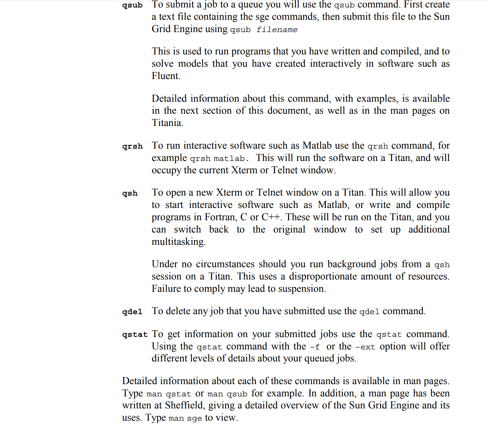
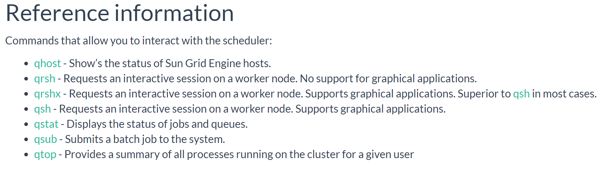

Why no one cares about HPC
Mike Croucher
Developer Advocate, Numerical Algorithms Group (NAG)
www.walkingrandomly.com@walkingrandomly
Michael.Croucher@nag.co.uk
My HPC career
- Used HPC (Sheffield)
- Supported HPC users (Manchester)
- Developed HPC services (Co-founded Sheffield RSE group)
- Head of HPC centre (University of Leeds)
- Commercial HPC (NAG)
Why the title?
HPC = Geek Top Gear
Any questions?
- Audience member 1: What’s a core?
- Audience member 2: Why does it run my R script slower than my laptop?
- Audience member 3: Do you have Excel installed on it?
What we like
What they need
Traditional HPC is irrelevant to most researchers!
...and most of the rest use it badly.
Hannay et al (2009)
- Online survey of 1972 international researchers
- ~80% never use a supercomputer
Prabhu et al (2011)
- Interviewed 114 researchers at Princeton
- ~40% never use a supercomputer
Prabhu et al (2011)
- "Despite enormous wait times, many scientists run their programs only on desktops"
- "About a third of researchers did not use any form of parallelism in their research at all"
- “Currently, many researchers fit their scientific models to only a subset of available parameters for faster program runs.”
and yet....
Prabhu et al (2011)
“Across disciplines, an order of magnitude performance improvement was cited as a requirement for significant changes in research quality”
and yet....
Postgrad sleeping in computing lab to guard 3 machines instead of using the HPC centre across the road!
why?
Potential HPC users are changing
What Software?
More people need HPC than ever
But it's so hard to use!
My mobile back then

My HPC back then
My mobile now
My HPC now
What users are used to
What we give them
We can do better
New Geek Top Trumps?
Our HPC is the easiest to use in the world!
The queue
Can you give me 10x speedup on demand?
Reproducibility is hard
My low bar
I want to run your code, using your data and workflow and get the same results you did
On my machine
Automated
The Ideal
Results = TheAnalysis(MyData)

Reality

Use version control
Include your submission scripts
Don't forget the environment
How was everything compiled?
Real Reproducibility
Parallelisation is hard
Parallelisation and adding up
ans = 0.1 + 0.2 + 0.3
order matters!
order matters
x = (0.1+0.2) + 0.3 = 0.60000000000000009
y = 0.1 + (0.2+0.3) = 0.59999999999999998
Technological drivers
- Many core parallelism
- Low precision arithmetic
- Vectorisation
- Exotic hardware
People
Research Software Engineers
10x speedup? No problem!

RSE Support
RSE Support
All good Universities have a central RSE support function.
Support your RSE team
- Co-authors on papers
- Add them to your grants
- Invite them to your seminar series
- Don't ask them to fix your printer
Support your RSE team
Or you will lose them!
What next?
Discuss with me how you are solving these problems
What problems did I miss